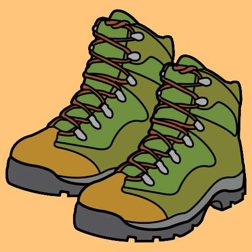
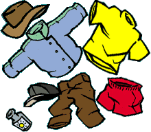
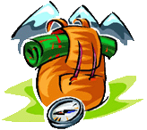
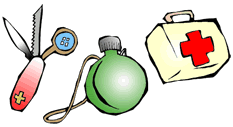

En esta página podrás ver una serie de consejos y trucos para poder disfrutar de nuestras salidas de senderismo de una manera más cómoda y mejor preparada. En principio, el senderismo no exige un material específico, pero si es cierto que si escogemos mal el equipo disfrutaremos menos de la salida.

El elemento básico para el senderismo es el calzado. En principio cualquier calzado cómodo sirve, siempre y cuando esté adaptado al pie, es decir haya sido ya usado. Nunca estrenar los zapatos con una caminata. Lo ideal es llevar unas botas de senderismo. Esta bota debe tener una suela algo rígida y con buen dibujo, con media caña (justo por encima del tobillo) que agarre bien el tobillo. Es importante que tengamos libertad de movimientos en los dedos ya que sino en los descensos golpearan con la punta de la bota. Las torceduras se evitan con cordones que sostengan la zona media del pie, talón y articulación.
Con respecto a los pies, a parte del calzado, los calcetines que sean de algodón y no aprieten. Cualquier costura, goma o etiqueta puede hacer ampollas por el roce.
Utiliza ropa cómoda y holgada. Que te permita libertad de movimientos. La ropa ajustada dificulta la circulación sanguínea y aumenta la probabilidad de tener rozaduras (sobre todo los vaqueros) La indumentaria debe ser transpirable para que el sudor no se te pegue al cuerpo y así mantener la temperatura corporal. Evitaremos las camisetas de tirantes ya que se nos clavarían las correas de la mochila y nos saldrían rozaduras. Es importante llevar siempre algo de ropa de abrigo pues en la montaña el tiempo es muy cambiante.

Otro elemento imprescindible para una salida de senderismo es un chubasquero o capa de agua el cual nos evitará remojones innecesarios por culpa de la lluvia.
Para protegernos de los rayos del sol siempre es bueno llevar gorro/a, crema solar, cacao y gafas de sol. Aunque el día este nublado los rayos del sol atraviesan las nubes y su acción en el campo es mayor que en las ciudades.

En cuanto a la mochila debemos evitar siempre llevar bandoleras o bolsas con correas de cordón pues se nos clavaría en el hombro. Casi cualquier tipo de mochila vale, pero mejor si tiene refuerzos para la espalda, nos hará más cómoda la marcha.
Con respecto a la comida, es bueno llevar siempre alguna barrita energética, chocolatina o frutos secos para reponer fuerzas en las paradas intermedias. Nunca lleves peso de más (deja la olla de garbanzos para otro día) pero tampoco pases hambre. No olvides llevar una cantimplora con agua.
Unos bastones siempre vienen bien para caminar. Los ideales son los de 3 secciones pues se pueden recoger y guardar fácilmente en la mochila si no queremos usarlos en algún momento.
Por último, de forma opcional, es bueno llevar una cámara de fotos, prismáticos, baraja de cartas, brújula, botiquín, navaja multiusos, un cuaderno…

Si tienes cualquier duda acerca de estos u otros materiales para hacer senderismo, no dudes en preguntar a nuestros monitores durante las excursiones.